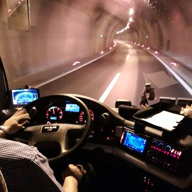

Pocetna
Vozila
Povijest
Kontakt
IV-KO Bus
Križevački Autobusni Prijevoznik
/ KAP j.d.o.o.
KAP j.d.o.o.

Na mail možete poslati svoj upit za cijenu prijevoza organiziranih izleta od 16 do 78 sjedala, od mini busa do katnog autobusa, sve verzije posjedujemo te tu smo za vas. Hvala vam LP. email:ivko.bus@gmail.com
Vozimo sigurno i udobno sa visoko turističkim busevima na svim europskim
destinacijama. Mi smo tim koji godinama radi na unapređenju kvalitete usluga
kako bi zadovoljili naše korisnike. Cilj nam je bio specializirati se za sve vrste
prijevoza što smo s godinama uspijeli sa brojem sjedala, sigurnosti koju pružamo,
komfoprtom, kavalitetom te prihvačanjem najviših svjetskih standarda i normi.
Mi smo pravi izbor ako planirate neko putovanje za veliki broj putnika bilo djece
ili odraslih. Bit će nam izuzetno drago ukoliko se pridružite velikom broju naših
zadovoljnih klijenata. Temelj svakog poduzeća, tako i našega, su djelatnici koji
svojim trudom i zalaganjem osiguravaju konstantnu urednost i ispravnost naših
autobusa. Svi djelatnicu su uvijek nasmijani i spremni pomoći tako da putujete
s osmijehom i radujete se svakom narednom putovanju sa našim osobljem.
Hvala vam na ukazanom povjerenju.
KAP j.d.o.o.
Vlasnik: Ivan Konjačić
MOB: 098 941 8181
Adresa: Marinovec 100
HR–48260 Križevci
OIB: 97344803767
Created by:
Zlatko Konjačić